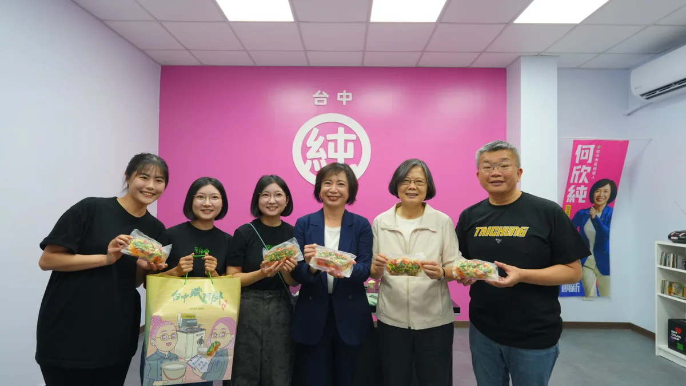
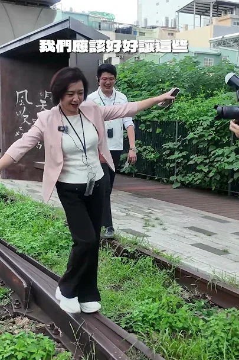
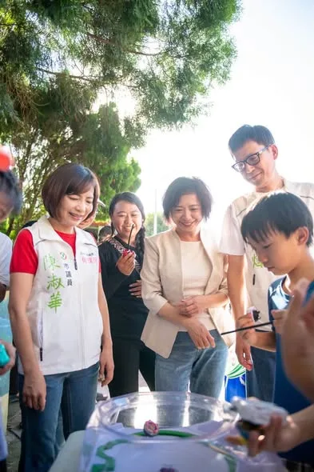

何欣純a_chun1973
@a_chun1973:增氣換煤超進度，中火燃氣新機組完工上場，10月就要開始拆煤，252 公尺煙囪拆除工作就要開始。 拆除燃煤機組計畫昨天通過，中央與地方都表示同意，全都支持提早自10月展開拆除工作。 「增氣換煤」不是口號，我們已完成燃氣機組上場的實際行動，全力保障台中市民健康。 未來我有機會就任市長，我會以市長身分，與中央政府密切合作，不會刻意卡關刁難、該做就做，全速推進增氣換煤工作，保障市民健康、穩定民生產業用電。
Accounts
| 平台 | 帳號 | 已收錄貼文 | 最後更新 |
|---|---|---|---|
| 官網 | https://a-chun.tw/ | 23 | 2026-09-03 12:00 |
| https://www.facebook.com/94achun/ | 109 | 2026-09-06 21:02 | |
| https://www.instagram.com/a_chun1973/ | 79 | 2026-09-10 20:34 | |
| Threads | https://www.threads.com/@a_chun1973 | 129 | 2026-09-11 11:19 |
| YouTube | https://www.youtube.com/channel/UCFcDN6t7tJ7qObwtyBQHdRg | 132 | 2026-09-11 11:00 |
| LINE 官方帳號 | https://page.line.me/beu1231o | 0 | — |
Timeline
顯示 472 / 472 則
@a_chun1973:增氣換煤超進度，中火燃氣新機組完工上場，10月就要開始拆煤，252 公尺煙囪拆除工作就要開始。 拆除燃煤機組計畫昨天通過，中央與地方都表示同意，全都支持提早自10月展開拆除工作。 「增氣換煤」不是口號，我們已完成燃氣機組上場的實際行動，全力保障台中市民健康。 未來我有機會就任市長，我會以市長身分，與中央政府密切合作，不會刻意卡關刁難、該做就做，全速推進增氣換煤工作，保障市民健康、穩定民生產業用電。

@a_chun1973:競選主委我有「雙主菜」蔡英文榮譽主委和蔡其昌主委； 競選歌曲，我們也推出「雙核心」，由何欣穗來幫忙何欣純創作「咱的台中咱來顧」。 感謝大台中的優秀音樂人聚合，何欣穗、小龜和奇哥一起創作這首歌，也感謝林昶佐Freddy的牽線，促成這次的合作。 台中，是我們的家鄉！ 11/28市長換欣，讓台中創新。 市民對未來好時光的憧憬，免驚！讓我來顧。

🌊 海線媳婦何欣純，推出 #4321海線大進擊！ 我是清水媳婦，也是海線媳婦。每次走訪海線，都能感受到鄉親對交通、建設與地方發展的期待。 今天，我和海線夥伴共同提出「4321海線大進擊」： 🚆 4條軌道加速 藍線拚通車、橘線動工延伸清水、海線鐵路雙軌高架化、舊貨運鐵道轉型觀光鐵道。 🛣️ 3條交通命脈打通 甲埔大道延伸、國道4號延伸台中港、生活圈4號道路闢建。 ✈️🚢 2大海空港升級 升級台中機場、活化台中港與梧棲漁港，帶動海線觀光與產業。 🏆 打造第1的海線 推動台中港盈餘回饋地方，讓海線產業、交通、文化、觀光一起升級！ 4321，海線大進步、大進擊！💪🌊

小英來開箱⛺️ 何欣純「露營風競總」有多特別？一起來看看！ @ingwen831

東豐快速道路即將開通-新台中，交給何欣純！！

今天很開心邀請競總榮譽主委蔡英文前總統，以及競選總部主委蔡其昌，一起來到我的競選總部，開箱我們充滿巧思的「露營風」空間！ 露營桌椅、植栽、燈串，還有市民充電站與政策牆，希望這裡不只是一座競選總部，更是一個大家可以坐下來聊聊、交換想法的地方。 接下來，我會和小英、蔡其昌主委，以及所有台中隊夥伴一起努力，一步一步，把台中帶向更好的下一個階段！

從台中市長侯選人，成為台中市長，需要台中市民每一分的力量、每一票的支持！ 歡迎留言告訴何欣純，台中市碰到的問題，何欣純來認真找解方！
從台中市長候選人，成為台中市長，需要台中市民每一分的力量、每一票的支持！ 歡迎留言告訴何欣純，台中市碰到的問題，何欣純來認真找解方！
心純姐妹會回顧 每一份心意 都是對台中的期待

中火燃煤兩機10月開拆 以氣換煤全速推進！何欣純台中要呼吸更好的空氣 @t.ai_good

跟著蔡其昌逛台中洲際！球場還能怎麼更好？⚾️

競選主委我有「雙主菜」蔡英文榮譽主委和蔡其昌主委；競選歌曲，我們也推出「雙核心」由何欣穗來幫忙何欣純創作「咱的台中咱來顧」。 台中，是我們的家鄉！ 11/28市長換欣，讓台中創新。 市民對未來好時光的憧憬，免驚！讓我來顧。

何欣純在英國求學的時候，想念台灣家鄉味，就會跟英國室友分享我的炒米粉，省錢有有人情味！ 美鳳姐超漂亮的！❤
何欣純政策許願池！敬老愛心卡大升級，國中小孩子營養午餐不分公私立學校通通免費，何欣純「政策許願池」好像還蠻好的！新台中，交給何欣純！

東豐快速道路，便利台中山城東勢往豐原之間的聯繫，大大縮短市民往來時間，東勢到石岡段即將通車，台中好山好水，觀光、農產、好風景更值得大大行銷，讓台中各區域更好更發展！！ 新台中，交給何欣純！！
感謝台中純派熱情響應🔥 #欣好店家 已經突破100間啦！ 選戰持續倒數，這股「純派動能」還要繼續擴大💪 我要再次邀請所有支持 #市長換欣 的夥伴，不論是在生活中向親朋好友分享，還是在社群上按讚、留言、轉發，每一次宣傳、每一份力量，都很重要！ 大家自己製作的純派小物、圖卡和各種創意應援，我都有看到，也真的非常感動❤️ 純派揪純派、朋友再揪朋友！ 只要你純愛台中，都是純派的夥伴 讓我們一起把訊息傳出去、把支持擴出去，讓更多人成為台中純派 集結更大的純派力量，打造欣欣向榮的大台中！
從台中市長侯選人，成為台中市長，需要台中市民每一分的力量、每一票的支持！ 歡迎留言告訴何欣純，台中市碰到的問題，何欣純來認真找解方！
@a_chun1973:天氣這麼熱，週末就是要讓孩子玩水消暑、大放電！💦☀️ 這段時間，我已經在大台中舉辦數十場「親子童樂列車」。每次看到孩子開心的笑容，更讓我相信：一座友善的城市，要從孩子的高度出發。 未來，我會重新檢視公園、道路與公共設施，讓孩子安全長大，也讓爸媽推著嬰兒車更方便。 育兒政策也要更給力！💪 從每月1,500元營養津貼、生育及坐月子補助、腸病毒疫苗，到增加托育名額、夜間與假日托育服務，全方位減輕爸媽的負擔。 讓孩子開心長大、爸媽安心育兒，就是我要打造的台中❤️
上周末我成立 #心純姐妹會 ，現場許多姐妹拿著旗子、脖圍，甚至是自製海報要我簽名，讓我感受到姐妹們的熱情與心意。 謝謝所有姐妹的鼓勵，我會帶著大家的期待繼續努力，努力開創一個更友善更溫暖的新台中🫶
@a_chun1973:台中市長選舉共三位登記 何欣純，是其一， 期待成為台中市民的唯一。 欣潮_追欣族_台中純派_純愛戰士_台中欣電心

何欣純競選主題曲《咱的台中 咱來顧》MV首播！

@a_chun1973:🌊 海線媳婦何欣純，推出 「4321海線大進擊」！ 我是清水媳婦，也是海線媳婦。每次走訪海線，都能感受到鄉親對交通、建設與地方發展的期待。 今天，我和海線夥伴共同提出海線進擊政策： 🚆 4條軌道加速 藍線拚通車、橘線動工延伸清水、海線鐵路雙軌高架化、舊貨運鐵道轉型觀光鐵道。 🛣️ 3條交通命脈打通 甲埔大道延伸、國道4號延伸台中港、生活圈4號道路闢建。 ✈️🚢 2大海空港升級 升級台中機場、活化台中港與梧棲漁港，帶動海線觀光與產業。 🏆 打造第1的海線 推動台中港盈餘回饋地方，讓海線產業、交通、文化、觀光一起升級！ 4321，海線大進步、大進擊！💪🌊

何欣純在英國求學的時候，想念台灣家鄉味，就會跟英國室友分享我的炒米粉，省錢有有人情味！美鳳姐超漂亮的！❤
何欣純政策許願池！ 何欣純主張，敬老愛心卡坐計程車從85點增加到200點，盧市長就從85點微幅增加到100點；國中小孩子營養午餐不分公私立學校通通免費，議會不分顏色的議員提案支持那麼多年，盧市長本來說沒有錢，後來何欣純、蔣萬安、陳其邁都說要做，盧市長就說有錢了、要跟著做......何欣純「政策許願池」好像還蠻好的！ 新台中，交給何欣純！
晚安🌙 今天很開心邀請競總榮譽主委蔡英文前總統，還有競選總部主委蔡其昌，一起來開箱我的「露營風」競選總部⛺️ 選戰進入倒數，每一天我都不敢鬆懈，也更珍惜大家給我的每一份支持與鼓勵。 一步一步走、一票一票爭取，繼續為台中全力以赴！

何欣純回舊城走讀 ! 跟我一起認識台中
@a_chun1973:從台中市長侯選人，成為台中市長，需要台中市民每一分的力量、每一票的支持！ 歡迎留言告訴何欣純，台中市碰到的問題，何欣純來認真找解方！
上周末我成立 #心純姐妹會 ，現場許多姐妹拿著旗子、脖圍，甚至是自製海報要我簽名，讓我感受到姐妹們的熱情與心意。 謝謝所有姐妹的鼓勵，我會帶著大家的期待繼續努力，努力開創一個更友善更溫暖的新台中🫶

有何欣純的地方，就有孩子的歡笑聲！ 這段時間我已經在大台中舉辦數十場 #親子童樂列車 活動，今天來到西屯福恩籃球場，和大小朋友一起玩泡泡、釣魚，開心同樂。 最讓我感動的是，有小朋友一看到我，就開心喊著：「阿純來了！」看到孩子們玩得開心，就是我舉辦活動最大的意義。 孩子是城市的未來，未來我會從「孩子的高度」出發，檢視公園、道路與公共設施，讓孩子安全成長，也讓爸媽推著嬰兒車更方便。 我也會持續減輕家庭育兒負擔，推動0至6歲每月1,500元營養津貼、生育補助加碼、每胎5萬元坐月子補助，並補助腸病毒疫苗接種；同時推動公托、準公共托育及2歲專班名額倍增，擴大夜間與假日托育服務。 我會努力讓台中成為一座孩子開心、爸媽安心的城市！ #心存大台中 #市長換欣_台中創新

改善空品、穩定供電，是我一直努力的目標。 今天陪同行政院長卓榮泰視察 #台中火力發電廠，帶來「#增氣減煤」好消息： ✅ 兩部燃氣機組陸續投入供電 ✅ 燃煤1、2號機及煙囪10月啟動拆除 ✅ 用煤持續減量，朝2034年底前平時發電無煤化邁進 能源轉型正在一步步實現！未來我也會持續推動以氣換煤，兼顧穩定供電、產業發展與空氣品質，讓台中呼吸更好的空氣💪🌱